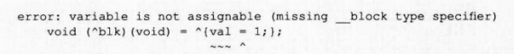

实际上,自动变量值截获只能保存执行 Block语法瞬间的值。保存后就不能改写该值。下面
我们来尝试改写截获的自动变量值,看看会出现什么结果。下面的源代码中, Block语法之前声 明的自动变量val的值被赋予1。
int val = 0;
void (^blk)(void)=^{val =l;};
blk()\;
printf ("val %d\n", val);
以上为在 Block语法外声明的给自动变量赋值的源代码。该源代码会产生编译错误。
若想在 Block语法的表达式中将值赋给在 Block语法外声明的自动变量,需要在该自动变量 上附加 __block说明符。该源代码中,如果给自动变量声明 int val附加 __block说明符,就能实 现在 Block内赋值。
__block int val= 0
blk();
printf("val = %d\n", val);
该源代码的执行结果为:
val=1
使用附有 __block说明符的自动变量可在 Block中赋值,该变量称为 __block变量